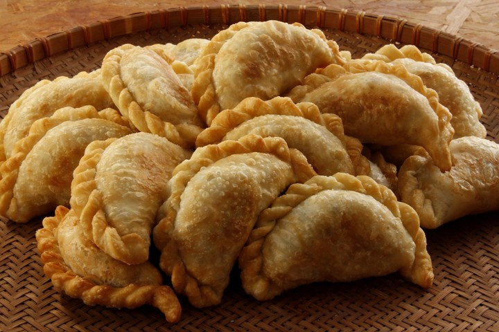

Empanadas
Regresar a la pagina de resetas

Descripción de la receta
La receta de empanadas es sencilla y bastante rendidora para las reuniones faamiliares. Puede ser util como entrada o plato principal.
Aunque es sencilla, lleva bastante tiempo y paciencia, sobre todo cuando debemos hacer el repulgue de las empanadas.
Ingredientes para la receta
- Carne Picada
- Sal
- Pimienta
- Pimenton
- Aceite
- Huevos
- Aceitunas
- Tapas de empanadas
Pasos de la reseta
- Poner en una olla una cucharada de aceite y la carne picada. Encender la olla.
- Poner a hervir los huevos hasta que se hagan huevos duros
- Agregar los condimentos a la carne
- Cocinar la carne hasta que la misma cambie de color
- Cuando la carne ya este lista, ponerla en una fuente grande junto con las aceitunas y los huevos duros cortados chiquitos. Esperar a quetodo eso enfrie, esto sera el relleno
- Despues de que haya enfriado el relleno, tomar las tapas de empanada
- A cada tapa de empanada se le debe mojar la mitad del contorno, ponerle el relleno, cerrala por la mitad y hacer el repulgue
- Ya armadas las empanadas, ponerlas en el horno o freirlas dependiendo del tipo de tapa que hayan comprado
- Cuando esten doradas, ya es momento de sacarlas